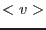
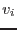

function stdDev(vector)
real(single), intent(in) :: vector(:)
real(single) :: stdDev
end function stdDev
This find the average  of the input values , then estimates the scatter or standard deviation  of these values from
of these values from